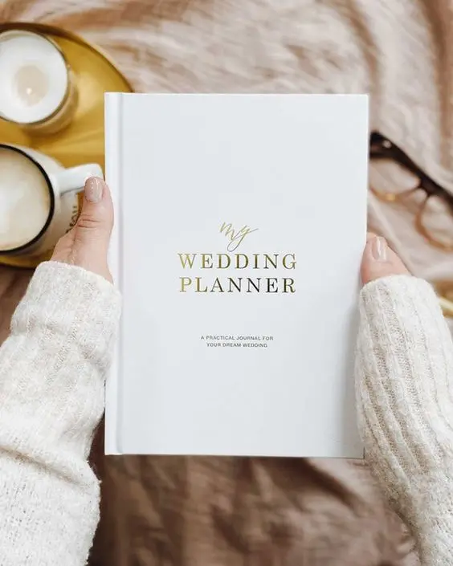
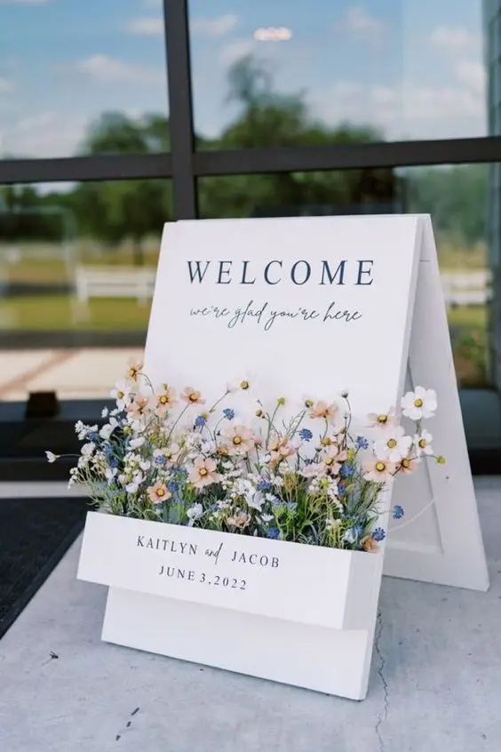
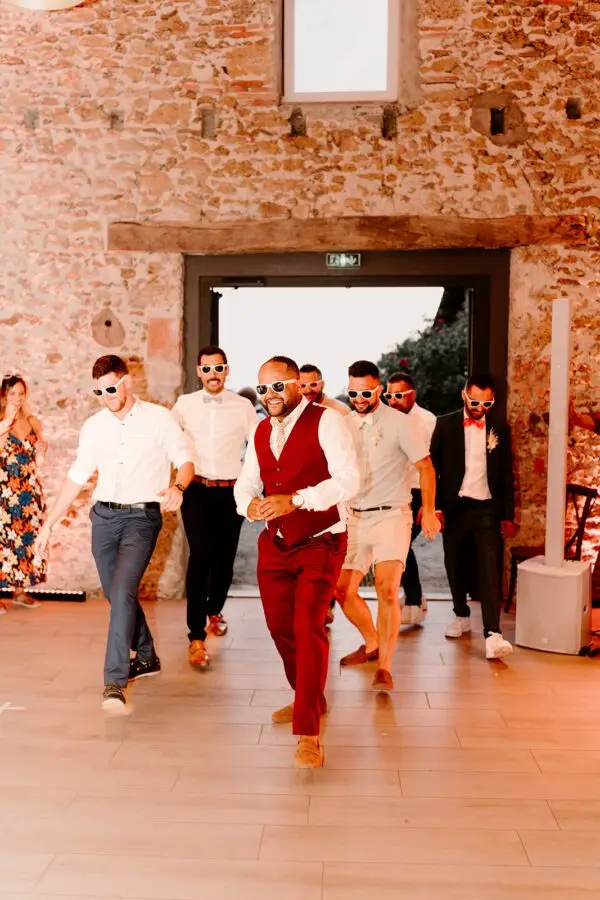
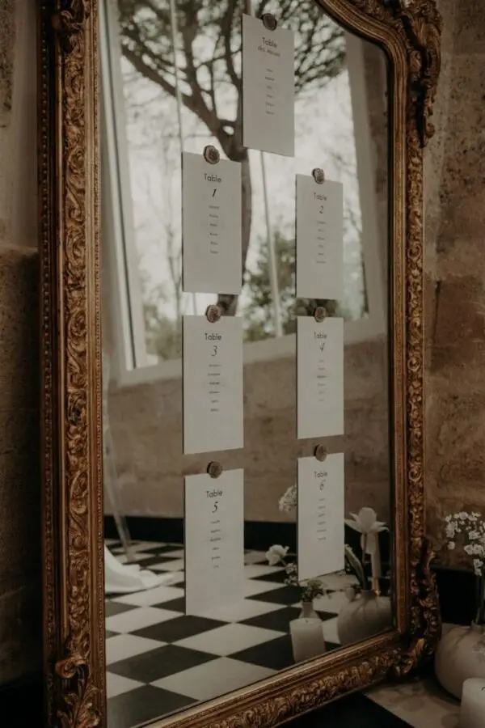
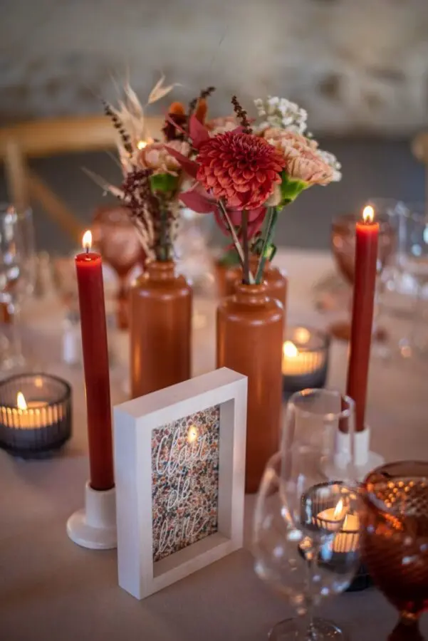
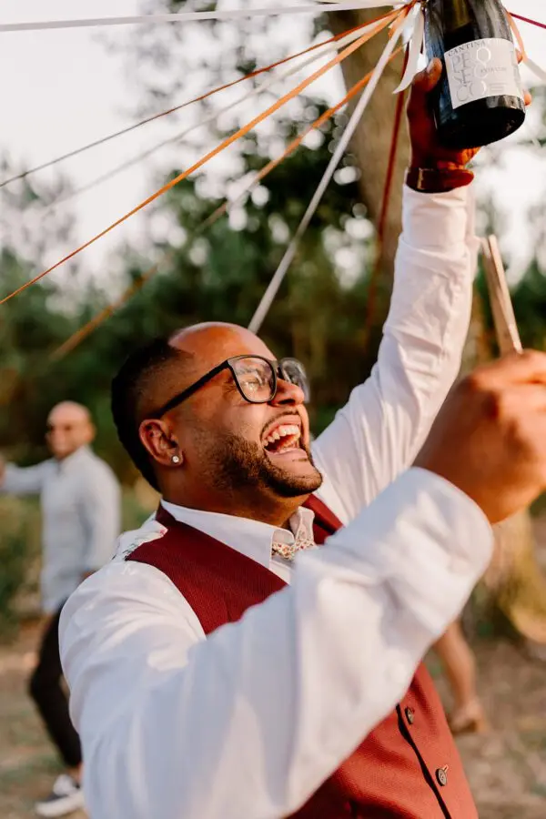
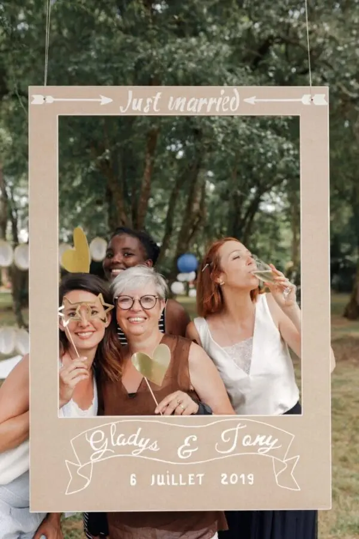

Depuis 2014, j’accompagne les couples qui se marient à Bordeaux, en Gironde et bien au-delà. Plus d’une centaine de mariages orchestrés plus tard, mon rôle de wedding planner reste le même : transformer vos envies en une journée fluide, élégante et profondément personnelle, pendant que vous profitez de chaque instant.
Wedding Designer certifiée par la Wedding Academy, je réunis sous une même signature l’organisation, le design et la coordination de votre mariage. Voici concrètement comment je travaille, ce que comprend chaque accompagnement et combien il faut prévoir.
Pourquoi faire appel à une wedding planner à Bordeaux ?
La région bordelaise offre des décors de mariage parmi les plus beaux de France : châteaux et domaines viticoles du Médoc, de Saint-Émilion ou de l’Entre-deux-Mers, lieux face à l’océan sur le Bassin d’Arcachon et au Cap Ferret, demeures de caractère en Dordogne. Cette richesse a un revers : les plus beaux lieux et les prestataires les plus demandés se réservent souvent plus d’un an à l’avance.
Travailler avec une wedding planner installée à Bordeaux, c’est profiter d’un carnet d’adresses éprouvé, de lieux que je connais de l’intérieur et de prestataires avec qui je travaille depuis des années. C’est aussi gagner un temps précieux sur la logistique propre à la région : accès aux châteaux, navettes, hébergement des invités, plan B en cas de pluie… Se marier en région bordelaise devient alors un plaisir, et non une course d’obstacles.
Mes trois accompagnements
Signature : organisation, design et jour J, dès 6 900 €
L’accompagnement le plus complet. Je vous suis de la recherche du lieu jusqu’au dernier invité : sélection et suivi des prestataires, budget, rétroplanning, puis conception d’un univers sur mesure (scénographie, décoration, achats, confection et installation). La veille et le jour J, je coordonne tout pour que vous n’ayez rien d’autre à faire que vivre votre mariage.
Collection : organisation et jour J, dès 5 000 €
Pour les couples qui ont déjà une idée précise de leur décoration, ou qui souhaitent la confier à un autre artisan. Je prends en charge les préparatifs complets : recherche du lieu, choix et gestion des prestataires, suivi du budget, rétroplanning, puis la coordination de la veille et du jour J.
Sérénité : coordination jour J, dès 2 200 €
Vous avez organisé votre mariage vous-mêmes et vous voulez le vivre pleinement. Nous nous rencontrons quatre mois avant la date : je reprends contact avec chacun de vos prestataires, j’établis le déroulé détaillé de la journée, puis je coordonne le jour J de A à Z. En option, je peux aussi imaginer et installer votre design et votre décoration, à partir de 2 000 €.
Tous les détails sont réunis sur la page accompagnements et tarifs.









Comment se déroule l’organisation de votre mariage
1. Le premier échange. Vous me racontez votre histoire, vos envies, votre nombre d’invités et votre budget. Je vous dis honnêtement comment je peux vous aider.
2. La proposition sur mesure. Je vous adresse un devis détaillé adapté à votre projet et à l’accompagnement choisi.
3. Le lieu et les prestataires. Je vous présente une sélection de lieux et de prestataires qui vous ressemblent, organise les visites et négocie pour vous.
4. Le design. Planche d’ambiance, palette, matières, fleurs, mise en lumière : je conçois un univers cohérent, du faire-part au dernier détail de la table.
5. Le rétroplanning. Chaque étape est datée et suivie, pour avancer sereinement sans rien oublier.
6. La veille et le jour J. Installation, accueil des prestataires, gestion des imprévus et du timing : je suis là du matin jusqu’à la soirée, pour que tout se passe comme prévu.
Wedding planner et wedding designer
Organiser, c’est essentiel ; donner une âme à votre journée, c’est ce qui la rend inoubliable. Ma double casquette de wedding designer me permet de penser votre mariage comme un tout : le lieu, la lumière, les fleurs, la table, le rythme de la journée. Chaque mariage que j’orchestre est unique, à votre image, jamais copié d’un précédent. Pour vous en faire une idée, découvrez quelques-uns des mariages que j’ai organisés.
Les questions qu’on me pose souvent
Quand réserver sa wedding planner ?
Pour un accompagnement Signature ou Collection, idéalement 12 à 18 mois avant la date, au moment où vous commencez à chercher votre lieu. Pour Sérénité, il suffit de réserver avant notre rendez-vous de lancement, quatre mois avant le mariage. Les dates de mai à septembre partent vite : mieux vaut me contacter tôt.
Intervenez-vous en dehors de Bordeaux ?
Oui. J’organise des mariages dans toute la Gironde, sur le Bassin d’Arcachon et au Cap Ferret, dans les vignobles de Saint-Émilion et du Médoc, en Dordogne, au Pays basque et partout en France. Nous en parlons ensemble dès le premier échange.
Accompagnez-vous les couples qui vivent à l’étranger ?
Avec plaisir, et en anglais si vous le souhaitez. Beaucoup de mes couples préparent leur mariage depuis l’étranger : nous avançons en visio, je visite les lieux pour vous et je deviens vos yeux et vos mains sur place.
Combien coûte une wedding planner à Bordeaux ?
Chez LOVELY DAY EVENT, la coordination du jour J commence à 2 200 €, l’organisation complète avec jour J à 5 000 € et l’accompagnement Signature, avec le design et la décoration, à 6 900 €. Le tarif final dépend de votre projet : nombre d’invités, lieu, durée de l’événement et niveau de personnalisation. Pour bien préparer votre enveloppe, lisez aussi mes conseils pour définir le budget de votre mariage.




Parce que certains instants méritent d’être inoubliables.
Alexandra Ambert
Vous vous mariez à Bordeaux, en Gironde ou ailleurs en France ? Racontez-moi votre projet : je vous réponds personnellement.